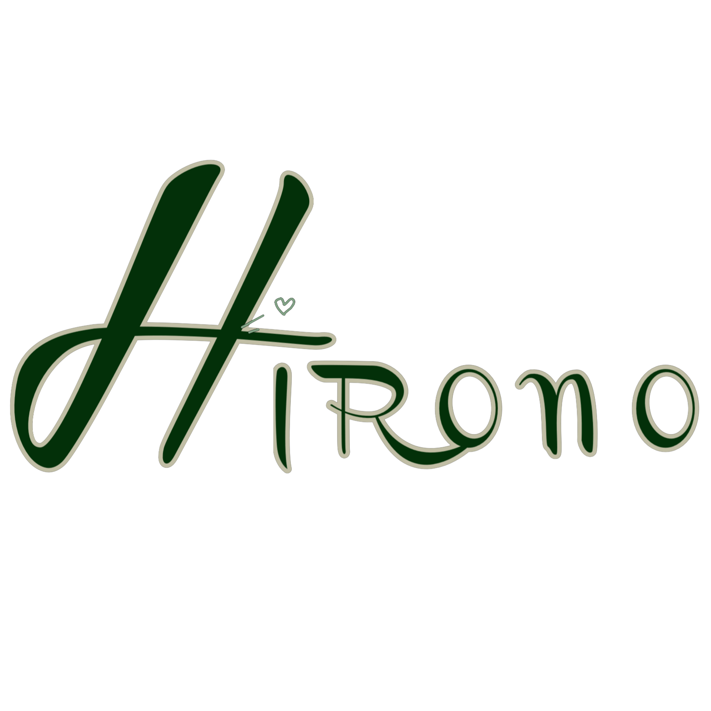

ABOUT US
Welcome to the world of Hirono—a place where emotions come to life in the
form of art. Created by contemporary artist Lang, Hirono is more than just a figure.
It’s a heartfelt expression of life’s subtle ups and downs—capturing feelings like
joy, sadness, fear, kindness, and everything in between. Each Hirono figure tells
a story, freezing a moment in time to remind us of what makes us human. What
began as a deeply personal artistic creation has now grown into a beloved
collectible, especially among fans of blind box toys and designer art figures. At
Hirono, we celebrate emotional connection, growth, and self-expression through
every carefully crafted piece. Whether you're a longtime collector or just discovering
this little figure with a big heart, Hirono welcomes you to feel, collect, and connect.
Each Hirono figure is thoughtfully designed to reflect real human experiences
moments that are often fleeting but deeply meaningful. Whether it’s the quiet strength in
a sad expression or the spark of joy in a gentle smile, Hirono invites you to see yourself in
its tiny frame. As the collection grows, so does the emotional universe it represents, making
every new release not just a collectible, but a meaningful addition to your personal journey.
At its core, Hirono is about connection—between art and emotion, between people and stories.
Join us as we continue to explore the beauty of being human, one figure at a time.